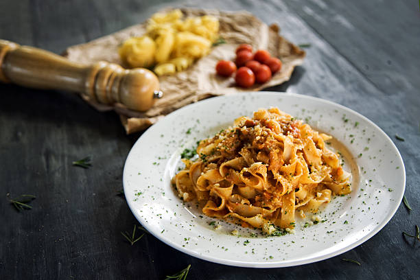
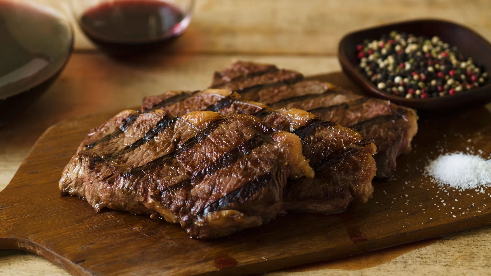
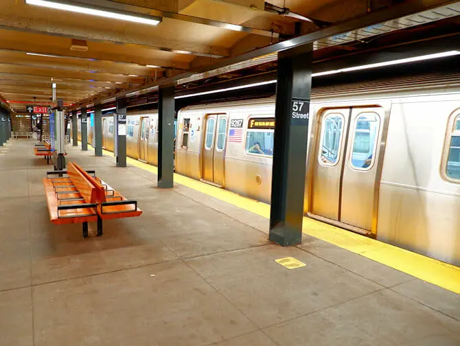
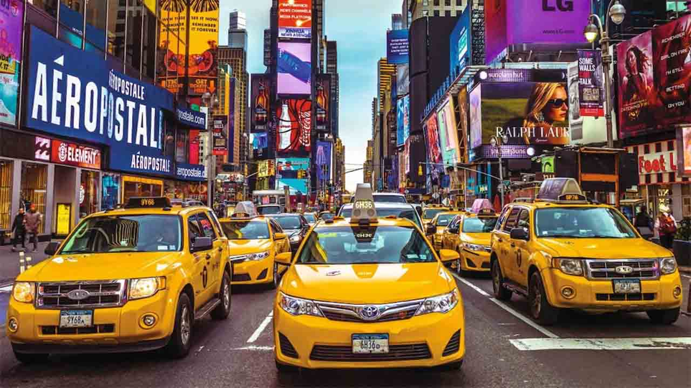

Recomendaciones
Publicar Recomendación
Restaurante, Italia
Restaurante LaPasta: “El mejor restaurante de pastas que visité, obviamente una de la virtudes de los italianos es la pasta”

Tour, Rio de Janeiro
Tour Cristo Redentor: “Sin dudas es un tour que hay que hacer en Río de Janeiro, imperdible, lo que sí recomiendo ir bien temprano porque se llena de gente”

Gastronomia, NY
Restaurante LaArgentina: “En Nueva York hay muchos restaurantes de distintos lugares del mundo con diferentes gastronomias, a su vez de Argentina hay varios, pero este me parecio el mejor y mas acertado”

Transporte NY
Transporte Nueva York: “En Nueva York los precios vuelan y para un turista, mas que nada Argentinos, nos resulta todo demasiado caro, por eso recomiendo siempre el subte, es lo mas fácil barato y llega a todos lados”
Hotel, Miami
Hotel Plaza: “Muy buen hotel de Miami, hay muchas ofertas buenas de hoteles, pero este se encuentra frente a la playa y el precio es increible, como ningún otro”

Restaurante, Paris
Hamburgueseria Bros: “Las mejores hamburguesas que probé en Paris, además esta muy bien ubicada, en una de las calles más concurridas”

Transporte, Nueva York
Transporte Nueva York: “Muy caros los taxis, no me parece que valga la pena, mejor tomar transporte publico, usarlo cuando sea sumamente necesario como moverte con maletas”

Tour, Nueva York
Tour Estatua de la Libertad: “Bastante caro el tour, pero a fin de cuentas como todo en Ny, si o si hay que conocerla. Recomiendo ir temprano porque hay bastante fila.”